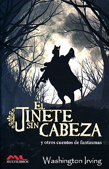
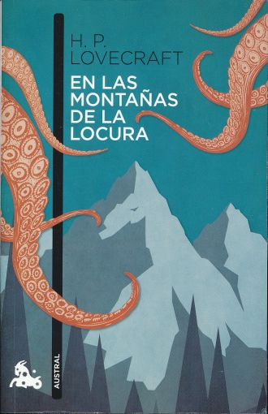
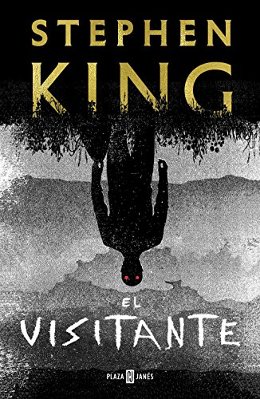
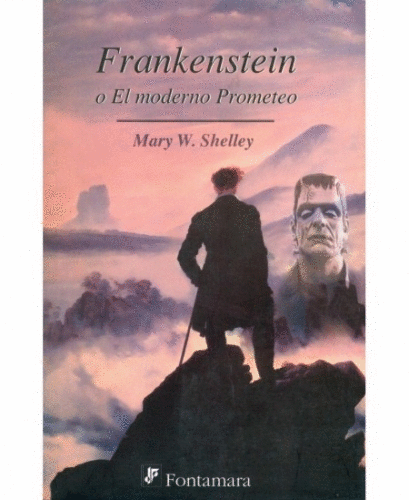

El Jinete sin Cabeza
 Un policía de la época colonial descubre una serie de horribles decapitaciones en una villa del norte de Nueva York.
Leer "El Jinete sin Cabeza"It
 Varios niños de una pequeña ciudad del estado de Maine se alían para combatir a una entidad diabólica que adopta la forma de un payaso y desde hace mucho tiempo emerge cada 27 años para saciarse de sangre infantil.
Varios niños de una pequeña ciudad del estado de Maine se alían para combatir a una entidad diabólica que adopta la forma de un payaso y desde hace mucho tiempo emerge cada 27 años para saciarse de sangre infantil.
En las Montañas de la Locura
 Es la historia en primera persona de William Dyer, geólogo y profesor de la Universidad de Miskatonic de Arkham, el cual realiza una expedición al continente antártico junto a un equipo de especialistas. El superviviente narra cómo se inició el proyecto, cómo partieron junto a un gran equipo de aeroplanos, trineos y, en principio, todo lo indispensable para que el proyecto llegara a buen puerto; una vez instalada la base antártica todo se torna en desgracia tras un vuelo de reconocimiento donde se topan con una impresionante cordillera oscura llena de maldad.
Leer "En las Montañas de la Locura"El Visitante
 Un niño de once años ha sido brutalmente violado y asesinado. Todas las pruebas apuntan a uno de los ciudadanos más queridos de Flint City: Terry Maitland, entrenador en la liga infantil, profesor de literatura, marido ejemplar y padre de dos niñas.
Leer "El Visitante"Frankenstein o el Moderno Prometeo
 El éxito del experimento de crear vida a partir de restos humanos, conduce a la locura y muerte de un doctor.
Leer "Frankenstein o el Moderno Prometeo "